pendigits data - mixture model clustering
Statistical Programming using R
Here are the packages we use in this work.
library(reshape2)
library(ggplot2)
library(FactoMineR)
library(mclust)## Package 'mclust' version 5.2.1## Type 'citation("mclust")' for citing this R package in publications.Here is the previous code (see here for details) that we need in this part.
# Importation
pen.tra = read.table("donnees/pendigits.tra", sep = ",")
pen.tes = read.table("donnees/pendigits.tes", sep = ",")
pen = rbind(pen.tra, pen.tes)
names(pen) = c(paste0(c("X", "Y"), rep(1:8, each = 2)), "digit")
pen$digit = factor(pen$digit)
# Drawn function
drawn <- function(v, n = NULL, point = FALSE, add = FALSE, color = "black") {
# Transformation of the data.frame if needed
if (is.data.frame(v))
v = unlist(v)
# extract x and y coordinates
x = v[seq(1, 15, by = 2)]
y = v[seq(2, 16, by = 2)]
# optimize space into graphics in reducing margin (sse ?par for more information)
opar = par(mar = c(0, 0, 2, 0) + .1)
if (!add) { # Create a graphic
plot(x, y,
# Specify limits is a way to have always the same frame for plotting lines
xlim = c(-5, 105), ylim = c(-5, 105),
# Do not show axes
axes = FALSE,
# If point is TRUE, we add a space (with pch = " ") at each point
# If not, draw a line
type = ifelse(point, "b", "l"),
pch = " ",
# Specify color (black by default)
col = color,
# Add a title (NULL by default)
main = n)
if (point) text(x, y, 1:8)
} else { # Add line to the plot
# lines() add lines to an existing plot (the last produce)
lines(x, y,
# same comment than before
xlim = c(-5, 105), ylim = c(-5, 105),
type = ifelse(point, "b", "l"),
pch = " ",
col = color)
}
par(opar)
}
# PCA
res = PCA(pen, quali.sup = 17, graph = FALSE)
res2 = data.frame(res$ind$coord, digit = pen$digit)Application on pendigits
5 digit
In our case, we have to perform a mixture model clustering for each digit. Here, we focus on the 5 digit. First, we compute the \(EM\), and we use \(BIC\) to choose the number of clusters.
dig = 5
mclust5 = mclustBIC(subset(pen, digit == dig, -digit))
summary(mclust5)## Best BIC values:
## VEV,9 VEV,8 EEV,8
## BIC -110605.4 -111327.0593 -111682.658
## BIC diff 0.0 -721.6378 -1077.237plot(mclust5)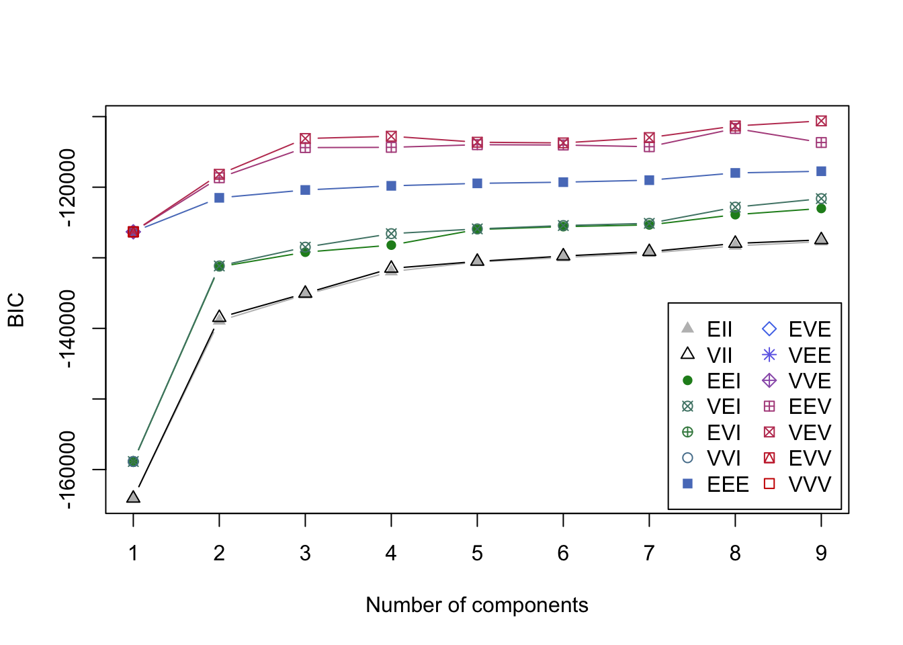
mclust5.best = Mclust(subset(pen, digit == dig, -digit), x = mclust5)
mclust5.best## 'Mclust' model object:
## best model: ellipsoidal, equal shape (VEV) with 9 componentsWe can now use the result of the automatic choice made by mclustBIC() to represent these 9 clusters. We do not use ggplot() to plot the factorial map, to be able to have in one graphic the mean digit for the clusters, and the projections for the points.
mclust5.sub = data.frame(subset(pen, digit == dig, -digit),
cluster = factor(mclust5.best$classification))
mclust5.pca = data.frame(subset(res2, digit == dig, -digit),
cluster = factor(mclust5.best$classification))
mclust5.mean = aggregate(. ~ cluster, mclust5.sub, mean)
par(mfcol = c(2, mclust5.best$G), mar = c(0, 0, 0, 0) + .1)
for (k in 1:mclust5.best$G) {
drawn(mclust5.mean[k,-1], point = TRUE)
plot(Dim.2 ~ Dim.1, subset(mclust5.pca, cluster == k),
xlim = range(res2$Dim.1),
ylim = range(res2$Dim.2),
col = rainbow(mclust5.best$G)[k], pch = 19,
axes = FALSE, xlab = "", ylab = "", frame.plot = TRUE)
}
For all digits
We can apply the preceeding code to all digit, to get an estimation of the number of clusters for all of them. We transform it to directly get the part of the results we want.
mclust = lapply(0:9, function(dig) {
sub = subset(pen, digit == dig, -digit)
m = mclustBIC(sub)
m.best = Mclust(sub, x = m)
sub$cluster = factor(m.best$classification)
res = list(nc = m.best$G,
partition = m.best$classification,
sub = sub,
pca = data.frame(subset(res2, digit == dig, -digit),
cluster = factor(m.best$classification)),
mean = aggregate(. ~ cluster, sub, mean))
})Now, we can represent all this results.
for (dig in 0:9) {
par(mfcol = c(2, mclust[[dig+1]]$nc), mar = c(0, 0, 0, 0) + .1)
for (k in 1:mclust[[dig+1]]$nc) {
drawn(mclust[[dig+1]]$mean[k,-1], point = TRUE)
plot(Dim.2 ~ Dim.1, subset(mclust[[dig+1]]$pca, cluster == k),
xlim = range(res2$Dim.1),
ylim = range(res2$Dim.2),
col = rainbow(mclust[[dig+1]]$nc)[k], pch = 19,
axes = FALSE, xlab = "", ylab = "", frame.plot = TRUE)
}
}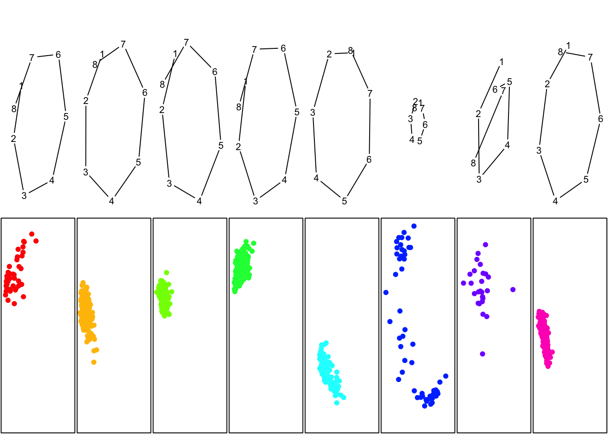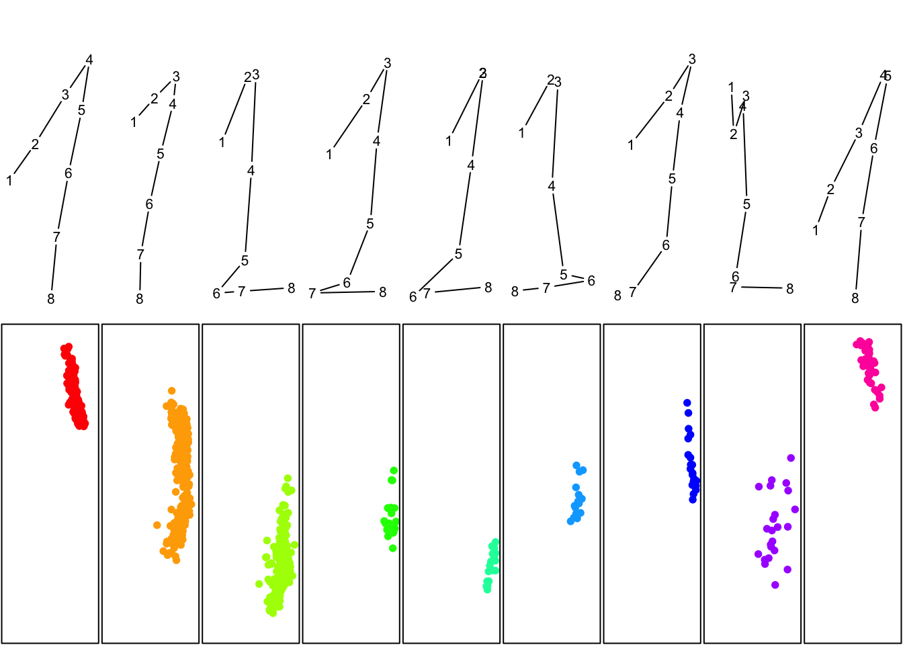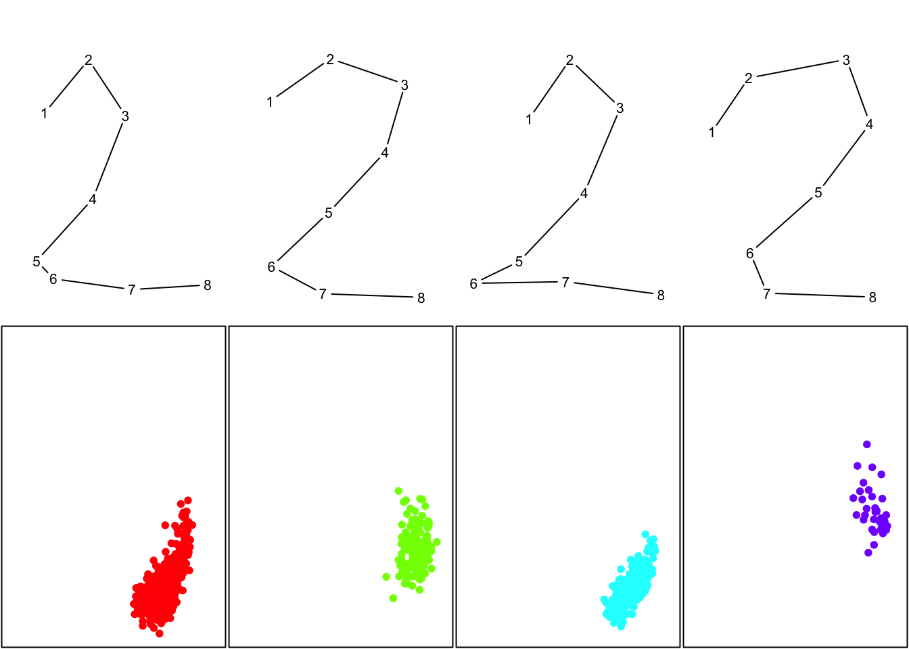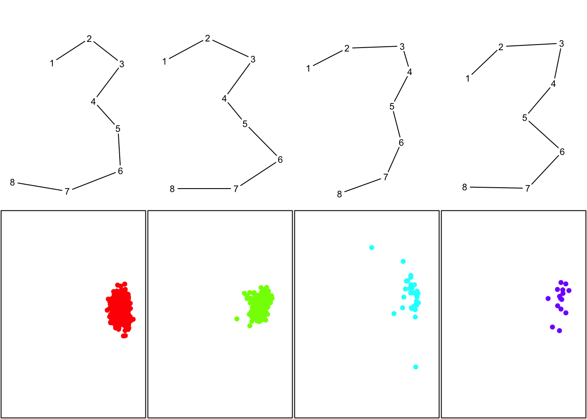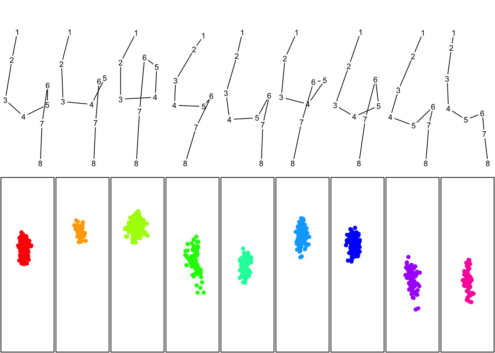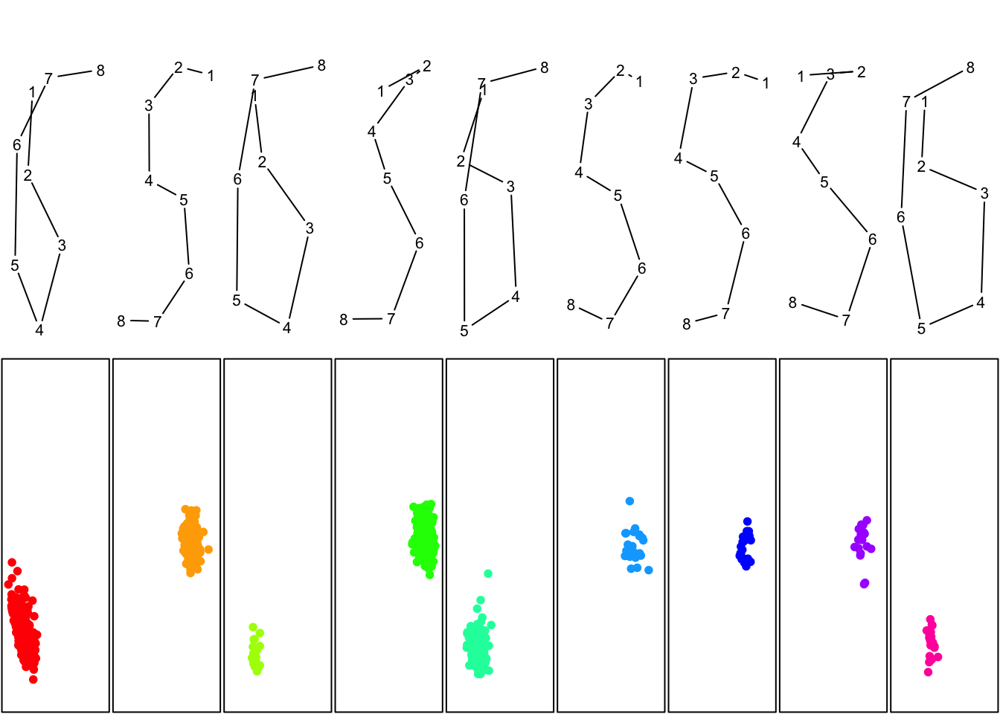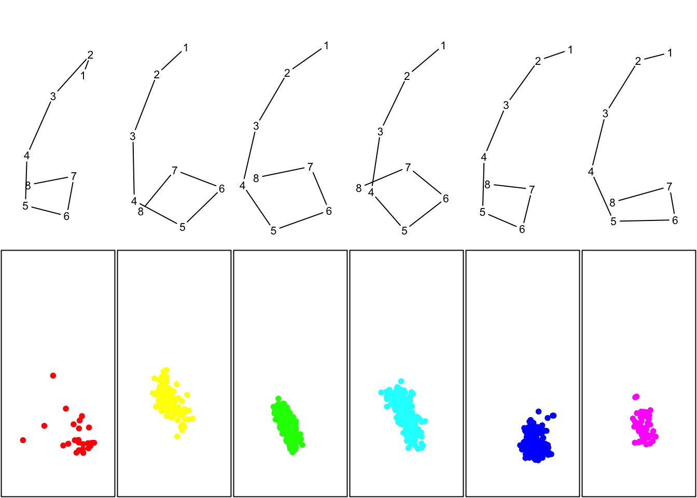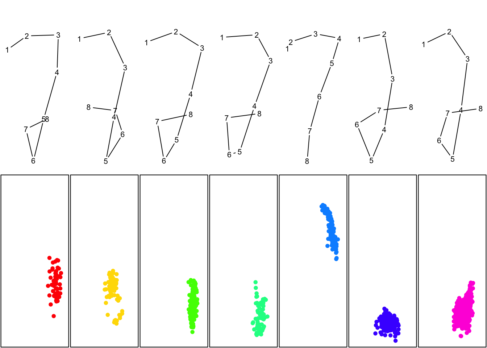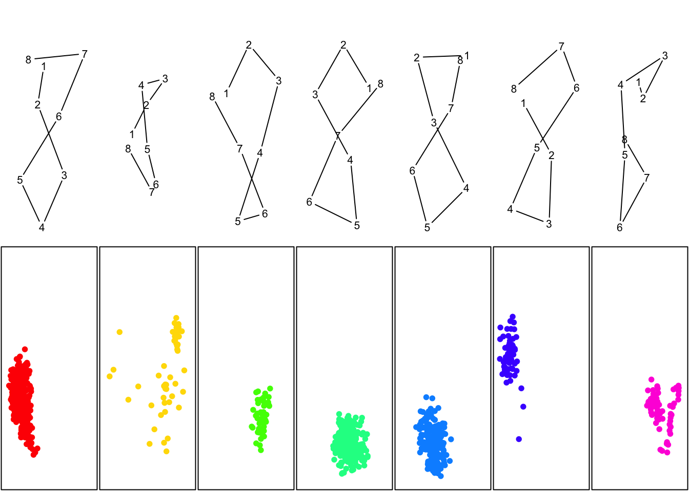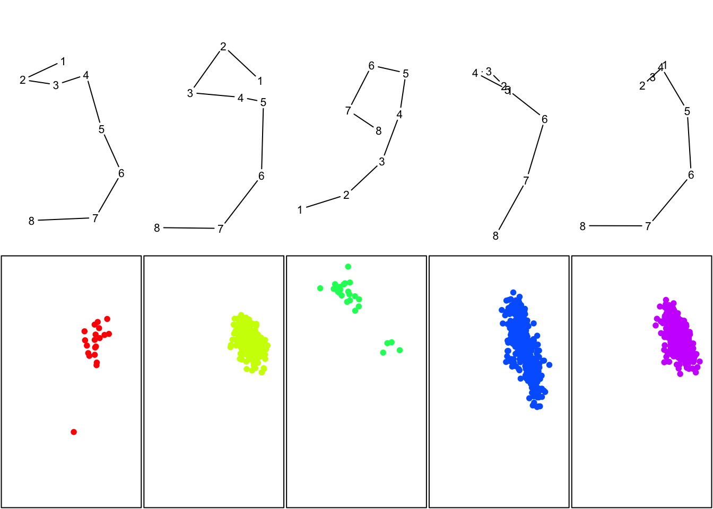